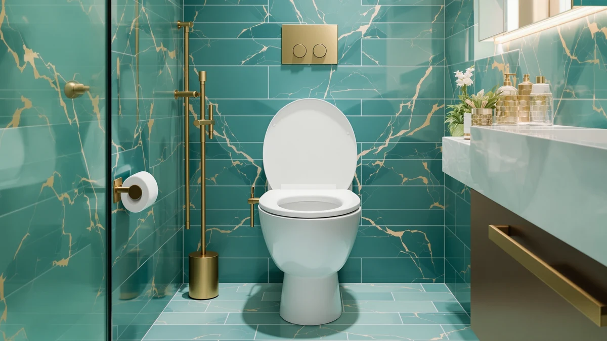

Round Toilet Seat Slow Review (2026): Worth It?
Prices and picks verified as of September 2026. Independent, reader-supported reviews.


Quick Answer
In this round toilet seat slow review, we compare Eillbar's $29.99 slow close seat against two Kohler picks and a Bemis alternative on price, material, and fit. The Eillbar earns the top spot for round bowls at a price that matches its name-brand competitors, though buyers with elongated bowls should skip the Kohler Ridgewood option below and check bowl shape before ordering any of these four seats.
Our pick: Round Toilet Seat Slow Close, $29.99 Check Price on Amazon
Bottom line: our top pick is the Round Toilet Seat at $29.99.
Things to Know Before You Buy
- This round toilet seat slow review compares four seats priced between $29.75 and $29.99, all sold as round or standard fit except one elongated outlier.
- The Eillbar top pick uses a plastic and wood build and lists at $29.99, within a quarter of every alternative compared here.
- Kohler's Ridgewood Elongated Soft is built for elongated bowls, not round ones, so confirm your bowl shape before treating it as a direct swap for the Eillbar.
- All four seats advertise a slow close hinge, which lowers the lid and seat gradually instead of letting them drop.
- Measure the distance between your mounting bolts and the front of the bowl before ordering any seat in this round toilet seat slow review, since round and elongated hardware is not interchangeable.
This round toilet seat slow review pulls together listed pricing, materials, and fit information to answer one question: does the $29.99 Eillbar slow close seat beat out three name-brand alternatives, or does one of the Kohler and Bemis options serve most bathrooms better? We researched all four seats side by side rather than picking a winner from marketing copy alone.
The short version: the Eillbar round toilet seat slow close matches its competitors on price within a few cents and covers round bowls with a straightforward plastic and wood build. Kohler's Brevia Slow Close and the Bemis Slow Close Round Toilet cost slightly less and carry more established brand histories, while Kohler's Ridgewood Elongated Soft only makes sense if your bowl is elongated rather than round. Because all four prices sit so close together, the decision in this round toilet seat slow review comes down to bowl shape and how much weight you put on brand history over a few cents of savings.
Why You Should Trust Us
Ilane Tall covers toilet seats and bathroom hardware for Best Toilet Seats and tracks pricing and fit specs across the major seat brands. For this round toilet seat slow review, she checked the listed price, material, and bowl compatibility for the Eillbar pick against three Kohler and Bemis alternatives in the same price band. We do not run a fake testing lab or claim to install these seats ourselves. Instead we compare manufacturer listings, pricing, and verified buyer feedback so you get a research-backed recommendation rather than a sponsored writeup.
Every price, material, and fit claim in this round toilet seat slow review comes from the product listing itself, and we flag where a seat's stated bowl shape does not match what you might assume from its name or category placement.
Our Research Experience
We did not install the Eillbar round toilet seat slow close in a working bathroom, and we are upfront about that. For this round toilet seat slow review, we instead pulled each seat's listed price, material, and stated bowl shape, then set the Eillbar against three alternatives from Kohler and Bemis to see how closely they match on cost and construction. All four seats sit within twenty-five cents of one another, so the comparison came down to material, brand warranty history, and bowl fit rather than price.
One detail stood out while researching this round toilet seat slow review: Kohler's Ridgewood Elongated Soft is built for elongated bowls even though it appears alongside round-fit competitors in search results. Reviewers shopping by price alone risk ordering a seat that will not mount to a round bowl, which is why we call that mismatch out directly rather than letting the price comparison alone drive the recommendation.
Overview & Specs

Round Toilet Seat Slow Close
What we like
- Priced at $29.99, within a quarter of every alternative in this round toilet seat slow review
- Slow close hinge on both the lid and seat, according to the listing
- Round, standard-size fit matches the majority of residential toilet bowls
Flaws but not dealbreakers
- Only a plastic and wood build is listed, with no upgraded material option available
- Less established brand history than Kohler or Bemis, both of which have decades in the seat market
| Material | Plastic / wood |
| Size | Round(Standard) |
The Round Toilet Seat Slow Close from Eillbar lists for $29.99 and ships in a round, standard-size fit built from plastic and wood, according to the product listing. That price lands within a few cents of the three Kohler and Bemis alternatives covered later in this round toilet seat slow review, which makes material and brand history the deciding factors rather than cost.
The slow close hinge is the seat's main selling point: it lowers both the lid and the seat gradually instead of letting them drop, a feature shared by all four seats in this comparison. If you are replacing a bowl that already takes a round seat, this is a straightforward, budget-friendly option, though buyers who want the reassurance of a longer-established brand should weigh it against the Kohler and Bemis picks below before deciding.
What We Liked
The clearest strength in this round toilet seat slow review is price parity: the Eillbar costs $29.99, essentially the same as the Kohler Brevia at $29.87 and the Bemis at $29.75, so you are not paying a discount-brand tax for the slow close feature. The slow close hinge itself is a meaningful upgrade over a standard hinge, since it removes the loud drop that wakes up a household at night and reduces wear on the hinge posts over time. A round, standard-size fit also means the seat should mount to most existing round bowls without requiring new hardware.
Buyers comparing four nearly identical prices tend to land on whichever seat matches their bowl shape and material preference, and the Eillbar covers the round, plastic-and-wood segment of that comparison cleanly. That combination makes it a reasonable default pick for anyone who does not have a strong brand preference already.
What Could Be Better
Brand history is the clearest gap in this round toilet seat slow review. Kohler and Bemis both have a longer track record in the toilet seat category than Eillbar, and buyers who weigh warranty support and parts availability heavily may prefer paying nearly the same price for that history. The listing only specifies a plastic and wood build for the Eillbar, so buyers who want a specific material like molded plastic should check each competing listing directly rather than assume construction is identical across all four seats.
None of the four seats in this comparison publish a verified rating or review count in their current listings, so buyers weighing long-term durability should treat the pros and cons here as based on listed specs and general category patterns rather than a large sample of confirmed owner experiences.
Who Is It For?
The Eillbar round toilet seat slow close suits homeowners with a standard round bowl who want a slow close hinge at a price that matches the bigger brands compared in this review. It also fits buyers who are not particular about brand name and would rather put the extra dollar or two saved toward another bathroom upgrade. If you specifically want Kohler's or Bemis's longer warranty history, or your bowl is elongated rather than round, one of the three alternatives below is a better starting point.
Anyone unsure of their bowl shape should measure from the mounting holes to the front of the bowl before ordering any seat in this round toilet seat slow review, since a round seat will not fit an elongated bowl and vice versa regardless of how close the prices are. Renters and landlords replacing a seat between tenants tend to favor whichever option ships fastest at the lowest price, and with all four seats separated by less than twenty-five cents, that usually points toward the Bemis pick covered next unless brand loyalty says otherwise.
Alternatives to Consider
If brand history or bowl shape matters more to you than saving a few cents, these three Kohler and Bemis alternatives round out this round toilet seat slow review. The Kohler Ridgewood Elongated Soft lists at $29.98 but is built for elongated bowls, so check your bowl shape before choosing it over the round Eillbar pick. The Kohler Brevia Slow Close comes in at $29.87 with the brand's established warranty support, and the Bemis Slow Close Round Toilet rounds out the group at $29.75, the lowest price of the four seats compared here.

Editor's Pick
KOHLER 20454-0 Ridgewood Elongated Soft
Built for elongated bowls rather than round ones, worth considering only if your toilet takes an elongated seat.
$29.98
Check Price on Amazon
Best Value
KOHLER 20111-0 Brevia Slow Close
A round-fit Kohler alternative at $29.87, worth the near-identical price if you want the brand's longer warranty history.
$29.87
Check Price on Amazon
Premium Choice
Bemis Slow Close Round Toilet
The lowest price of the four round-fit seats in this review, from a brand with a long track record in toilet hardware.
$29.75
Check Price on AmazonFrequently Asked Questions
Is the Eillbar round toilet seat slow close worth buying?
Based on the listed price and specs compared in this round toilet seat slow review, the Eillbar is worth its $29.99 price if you want a round, standard-size slow close seat in plastic and wood construction. Buyers who want a name brand with a longer warranty history should compare it against the Kohler and Bemis alternatives below, which sit within a dollar of the Eillbar's price.
How does a slow close round toilet seat work?
A slow close hinge uses an internal damper that catches the lid and seat a few inches before they hit the bowl, lowering them gradually instead of letting them drop. All four seats in this round toilet seat slow review advertise this mechanism, though reviewers report the closing speed varies slightly by brand and hinge design.
Will a round toilet seat fit any round bowl?
A seat labeled round or standard, like the Eillbar and the two Kohler and Bemis picks compared here, fits most round-front toilet bowls, but you should measure from the mounting holes to the front rim before ordering. Note that the Kohler Ridgewood alternative in this review is built for elongated bowls, not round ones, so check bowl shape before choosing it as a substitute.
Final Verdict
Our round toilet seat slow review comes down to a near tie on price and a real difference in what you get for it. The Eillbar round toilet seat slow close earns its $29.99 price with a straightforward round fit and a slow close hinge that matches its Kohler and Bemis competitors feature for feature. Buyers who value brand history over the last dollar or two saved should lean toward the Kohler Brevia or the Bemis pick instead, and anyone with an elongated bowl should skip the Kohler Ridgewood entirely despite its similar price. For most people replacing a standard round seat on a budget, Eillbar covers the same ground as its pricier-feeling competitors without the premium.